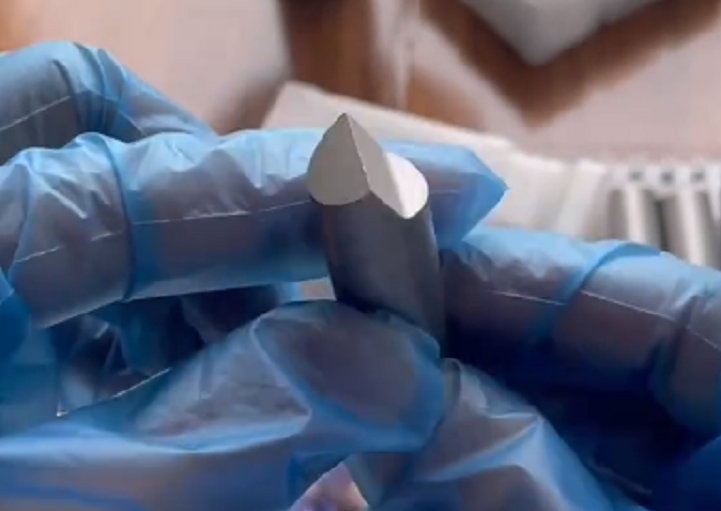
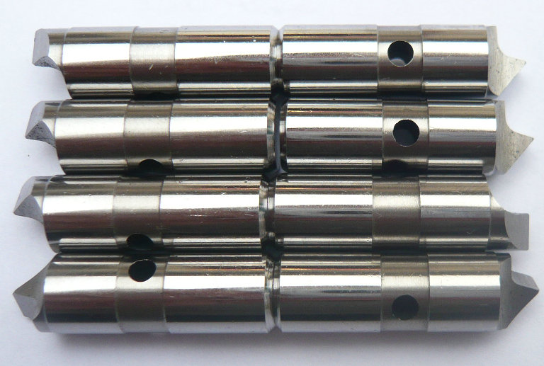

Die Mitnehmerbolzen mit axial federnder Zentrierspitze ermöglichen eine zuverlässige Zentrierung auch bei unebenen Werkstückstirnseiten.


Wir sind ein chinesischer Hersteller, der sich auf die Fertigung von Mitnehmerbolzen mit beweglicher Zentrierspitze für Stirnseiten-Mitnehmer spezialisiert hat. Unsere Produkte verbinden hohe Präzision, lange Standzeit und flexible Anpassung an Ihre individuellen Anforderungen.
Die bewegliche Zentrierspitze (auch axial verschiebbar oder federnd ausgeführt) gleicht automatisch Lageungenauigkeiten des Werkstücks aus. Dadurch wird eine sichere Zentrierung auch bei unebenen oder stirnseitig unbearbeiteten Rohteilen gewährleistet. Unsere Konstruktion bietet folgende Vorteile: =


Axiale Beweglichkeit – Die Zentrierspitze passt sich der Werkstückstirnfläche an, reduziert Schlag- und Planlauffehler. Hohe Drehmomentübertragung – Die formschlüssigen Mitnehmerbolzen übertragen selbst bei harten Schnittbedingungen zuverlässig die Antriebskraft.
Verschleißfeste Materialien – Einsatz- und Vergütungsstähle mit einer Härte bis 60+ HRC garantieren maximale Lebensdauer. Austauschbare Komponenten – Verschleißteile wie die Zentrierspitze können ohne aufwendige Demontage ersetzt werden.
Mitnehmerbolzen mit beweglicher Zentrierspitze (für Face Driver) im Vergleich zu Mitnehmerbolzen mit fixiertem Mittelpunkt
| Merkmal | Beweglicher Mittelpunkt | Fester Mittelpunkt | |||||||||
|---|---|---|---|---|---|---|---|---|---|---|---|
| Referenzpunkt | Auf der Werkstückfläche | Am festen Mittelpunkt | |||||||||
| Rundlaufabweichung (TIR) | 0,015 – 0,02 mm typisch | 0,001 – 0,005 mm | |||||||||
| Planflächenanforderung | Niedrig – gleicht unebene Flächen aus | Hoch – benötigt präzises Zentrumloch | |||||||||
| Am besten geeignet für | Allgemeines Drehen, kleine Serien, Hartdrehen | Ultrapräzise Schleifarbeiten, Feinschlichten | |||||||||
Wir wissen, dass der Begriff „China-Fertigung“ bei technisch anspruchsvollen Komponenten manchmal Skepsis hervorruft. Deshalb unterziehen wir jedes Bauteil einer 100%-Qualitätskontrolle: Maßprüfung, Härteprüfung und bei Bedarf Magnetpulver-Rissprüfung. Unsere Mitnehmerbolzen entsprechen internationalen Normen (ISO, DIN) und werden mit einem detaillierten Prüfprotokoll ausgeliefer.
- home
- products
- contact
- equipments
- offset driving parts
- half offset drive pins
- central driver parts
- standard/ Fixed driving pins
- Lowered drive parts
- clockwise driver pins
- counterclockwise driving parts
- full width drive pins
- Lasting driver parts
- chisel-edged driving pins
- floating drive parts
- power-operated driver pins
- hydraulic driving parts
- mechanical drive pins
- movable driver parts
- fixed driving pins
- carbide driver pins
- tool steel S7 driving parts
- changeable pins
- face drive pins